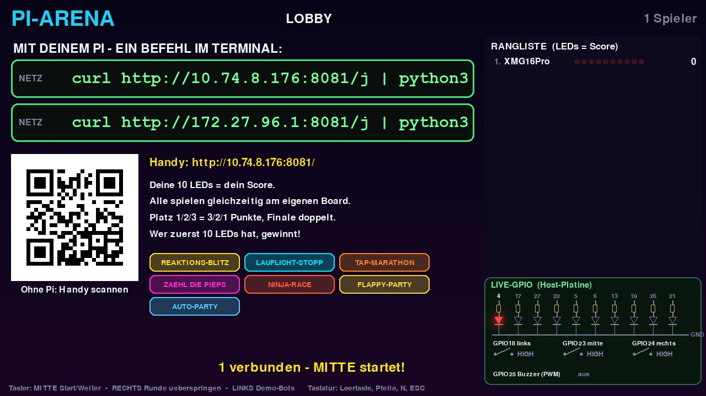
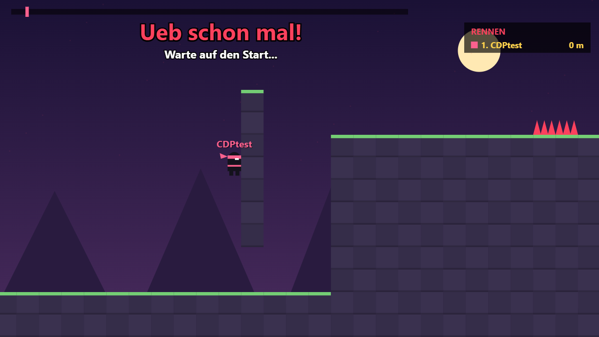
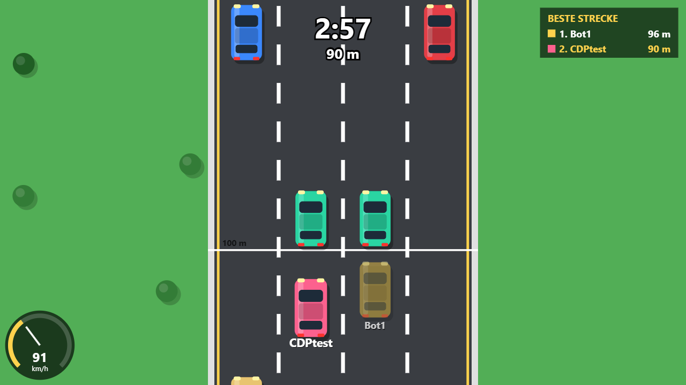

Die ganze Klasse spielt gegeneinander, jede und jeder am eigenen Pi mit der selbst gebauten Platine. Die 10 LEDs zeigen deinen Punktestand. Wer zuerst alle 10 leuchten hat, gewinnt. Und weil PiArena Open Source ist, darfst du jedes Spiel ändern oder dein eigenes einbauen.
PiArena ist ein Partyspiel für die ganze Klasse. Ein Raspberry Pi vorne am Beamer ist der Host: Er zeigt die Lobby, sagt die Runden an, zählt die Punkte und kürt am Ende den Sieger. Alle anderen spielen am eigenen Pi mit ihrer eigenen Platine (10 LEDs, 3 Taster, 1 Buzzer).

| Anzahl | Bauteil |
|---|---|
| 10 | LED 5 mm (Farbe egal) |
| 10 | Widerstand 220 Ω – 330 Ω |
| 3 | Taster (Drucktaster, schließend) |
| 1 | passiver Buzzer (Piezo) |
| 1 | Lochrasterplatine |
| 1 | 40-polige Buchsenleiste oder Jumper-Kabel |
| – | Draht, Lötzinn |
Alle Bauteile hängen zwischen einem GPIO-Pin des Pi und GND (Masse). Halte dich genau an die Pin-Tabelle, denn das Programm erwartet jede LED und jeden Taster an genau diesem Pin.
Wenn dein Pi schon läuft und du am Desktop bist, spring direkt zu Kapitel 5.
raspberrypi.com/software3ahel-pi-07. Das ist später auch dein Standard-Spielername.10.74.21.39. Deine findest du im Terminal mit
hostname -I. Du brauchst sie, wenn du später selbst einen Host startest.Das Terminal ist ein Fenster, in das du Befehle tippst. Öffnen: Symbol >_ oben in der Leiste
oder Strg + Alt + T.
Jeder Befehl wird mit Enter ausgeführt.
| Befehl | Was er macht |
|---|---|
pwd | Zeigt, in welchem Ordner du gerade bist. |
ls | Listet die Dateien im Ordner auf. |
cd pi-arena | Wechselt in den Ordner pi-arena. cd .. geht eine Ebene zurück, cd ~ nach Hause. |
python3 datei.py | Startet ein Python-Programm. |
hostname -I | Zeigt die IP-Adresse deines Pi. |
ping 10.74.21.39 | Prüft, ob ein anderes Gerät erreichbar ist. |
| Tab | Ergänzt Datei- und Ordnernamen. Tipp cd pi- und drück Tab. |
| ↑ | Holt den letzten Befehl zurück. Nie wieder alles neu tippen. |
| Strg + C | Stoppt das laufende Programm. |
| Strg + Shift + V | Einfügen im Terminal (normales Strg + V geht dort nicht). |
Arena und arena sind für Linux zwei verschiedene Ordner. Leerzeichen auch:
python3 arena/host.py braucht genau ein Leerzeichen nach python3.Die Lehrkraft startet den Host vorne am Beamer. Am Beamer steht dann ein Befehl. Den tippst du genau so ins Terminal deines eigenen Pi, zum Beispiel:
curl http://10.74.21.39:8081/j | python3
Das bedeutet: curl lädt das Spieler-Programm vom Host (10.74.21.39, Port 8081),
und | python3 startet es sofort. Du musst nichts installieren.
| Die LEDs … | Bedeutung |
|---|---|
| LED 1 und LED 10 blinken abwechselnd | sucht den Host (noch nicht verbunden) |
| ein Licht wandert hin und her | verbunden, wartet auf den Start |
| von außen nach innen + Piepsen | Countdown, gleich geht's los |
| einige LEDs leuchten fest | dein Punktestand |
Bevor die Partie startet, siehst du am Beamer unten rechts das Feld LIVE-GPIO nur für die Host-Platine. Deine eigene testest du am einfachsten im ersten Spiel: Drück im Countdown die Taster, jeder Druck macht einen Klick-Ton. Bleibt eine LED dunkel, prüf Richtung und Lötstelle (Kapitel 3).
| Spiel | So geht's | Taster |
|---|---|---|
| REAKTIONS-BLITZ | Alle LEDs blitzen auf → sofort drücken. 3 Versuche. Zu früh = +1000 ms Strafe. | MITTE |
| LAUFLICHT-STOPP | Ein Licht läuft hin und her. Stopp es genau in der Mitte (LED 5 oder 6). 3×, immer schneller. | MITTE |
| TAP-MARATHON | 10 Sekunden so oft drücken wie möglich. Die LEDs füllen sich. | alle drei |
| ZÄHL DIE PIEPS | Der Buzzer piept mehrmals. Mitzählen, dann die Zahl einstellen. Richtig und schnell gewinnt. | RECHTS +1, LINKS −1, MITTE fertig |
Bei diesen Runden geht am Pi von selbst ein Browser im Vollbild auf. Alle sind in derselben Welt, du siehst die anderen mit ihren Namen. Dein eigener Spieler ist mit „DU“ markiert.


| Spiel | So geht's | Steuerung |
|---|---|---|
| NINJA-RACE | Jump'n'Run bis ins Ziel. Schnellste Zeit gewinnt. | ◀▶ laufen, Leertaste springen |
| FLAPPY-PARTY | Vogel durch die Röhren. Abgestürzt? Nach 1 s geht's weiter, dein bester Versuch zählt. | Leertaste |
| AUTO-PARTY | Dem Verkehr ausweichen, es wird immer schneller. | ◀▶ Spur, ▲ Turbo |
Zuerst holst du dir den Code auf deinen Pi (einmal, braucht Internet):
cd ~ git clone https://github.com/Pholippo/pi-arena.git cd pi-arena
| Datei | Inhalt |
|---|---|
arena/minispiele.py | ⭐ Alle Taster-Spiele und die Töne. Hier baust du deine eigenen Spiele. |
arena/spieler.py | Das Programm für jeden Schüler-Pi: verbindet sich mit dem Host, steuert deine Platine. |
arena/host.py | Startet den Host (das Programm am Beamer). |
arena/ablauf.py | Der Spielablauf: Lobby, Runde, Punkte, Sieger. |
arena/monitor.py | Alles, was am Beamer gezeichnet wird. |
arena/webserver.py | Der Server, mit dem alle Pis und Handys reden. |
arena/browserspiele.py | Server für NINJA, FLAPPY und AUTO. |
tools/web-vorlagen/ | Die Browser-Spiele zum Ändern (HTML + JavaScript). |
tests/run_all.py | Prüft automatisch, ob noch alles funktioniert. |
Der Trick: Alle Pis bekommen dieselbe Zufallszahl. Darum blitzen alle LEDs in der Klasse gleichzeitig, obwohl jedes Spiel auf dem eigenen Pi läuft. Gemessen wird bei dir, das Netzwerk bremst nicht.
Jedes Spiel ist eine Python-Funktion in arena/minispiele.py. Sie bekommt drei Dinge:
b | deine Platine (das Brett). Damit schaltest du LEDs, liest Taster, spielst Töne. |
p | Einstellungen vom Host (meistens brauchst du sie nicht). |
rng | der gemeinsame Zufall. Bei allen Pis gleich. |
| Befehl | Was er macht |
|---|---|
b.zeige([1,1,0,0,0,0,0,0,0,0]) | LEDs schalten: 1 = an, 0 = aus. Hier: LED 1 und 2 an. |
b.zeige([1] * N) | alle 10 LEDs an (N ist 10). [0] * N = alle aus. |
b.pause(0.5) | 0,5 Sekunden warten. |
b.warte(2) | bis zu 2 Sekunden auf einen Taster warten. Ergebnis: ("mitte", zeitpunkt) oder None. |
b.leeren() | alte Tastendrücke vergessen (vor jeder neuen Eingabe). |
b.ton(T_SUPER) | einen fertigen Ton spielen. b.ton(kurz("A5", 0.1)) spielt eine einzelne Note. |
balken(4) | erzeugt das Muster „4 LEDs von links an“, z. B. für b.zeige(balken(4)). |
return {"wert": 312, "ok": True, "text": "312 ms"}
wert: die Zahl, nach der sortiert wird (Zeit, Treffer, Punkte …)ok: True, wenn das Ergebnis gültig isttext: was am Beamer neben deinem Namen stehttime.sleep() verwenden.
Immer b.pause() oder b.warte(). Nur dann kann die Lehrkraft eine Runde überspringen.Die Aufgaben werden Schritt für Schritt schwerer. Zum Ändern öffnest du die Datei in Thonny
(Startmenü → Entwicklung) oder im Terminal mit nano arena/minispiele.py.
cd ~/pi-arena python3 arena/host.py --fenster --nur reaktionDann ◀ = Demo-Bots dazu, Leertaste = Start, Esc = beenden. Deine Platine spielt mit. Ohne Platine (z. B. am Laptop) zusätzlich
--sim anhängen, dann drückst du die Taster mit
A S D.Such in arena/minispiele.py die Zeile mit FANFARE = lied(…). Schreib deine eigene Melodie.
FANFARE = lied("C6 C6 G5 C6 E6:2 - C6 E6 G6:3", 0.11)
C D E F G A B + Oktave, z. B. A4 (440 Hz). Halbtöne: C#5.:2 = doppelt so lang, - = Pause. Die Zahl am Ende ist das Tempo in Sekunden pro Note.Geschafft, wenn: bei der Siegerehrung deine Melodie spielt. Tipp: T_SUPER ist kürzer und kommt öfter.
Such die Funktion def spiel_reaktion(b, p, rng):.
3 in range(3) und im Status-Text."kurz") in der Tabelle SPIELE unten in der Datei.Geschafft, wenn: der Test mit --nur reaktion 5 Blitze zeigt und am Beamer der neue Text steht.
In arena/minispiele.py steht schon ein fertiges Übungsspiel: MORSE-ZÄHLER (spiel_morse).
Die LEDs blitzen 1 bis 5 Mal, du drückst MITTE genauso oft. Lies die Funktion Zeile für Zeile, jede hat einen Kommentar.
python3 arena/host.py --fenster --nur morsearena/einstellungen.py steht
DEAKTIVIERT = {"binaer", "simon", "morse"}. Lösch dort , "morse".
(Bonus: Dann sind simon und binaer die nächsten versteckten Spiele.)Bau ein ganz neues Spiel. Ideen: Hau den Lukas (so fest wie möglich = so schnell 2× hintereinander drücken), Links-Rechts (eine LED zeigt links oder rechts, richtigen Taster drücken), Ton-Höhe (hoch oder tief?).
Vorlage zum Kopieren:
def spiel_links_rechts(b, p, rng): """Eine LED links oder rechts leuchtet -> richtigen Taster druecken.""" punkte = 0 for runde in range(10): seite = rng.choice(["links", "rechts"]) # bei allen gleich if seite == "links": b.zeige([1, 1, 1, 0, 0, 0, 0, 0, 0, 0]) else: b.zeige([0, 0, 0, 0, 0, 0, 0, 1, 1, 1]) b.leeren() e = b.warte(1.0) # 1 Sekunde Zeit if e and e[0] == seite: punkte += 1 b.ton(T_TREFFER) else: b.ton(T_FEHL) b.zeige([0] * N) b.pause(0.3) return {"wert": punkte, "ok": True, "text": f"{punkte} von 10"}
Dann in der Tabelle SPIELE eintragen (schau dir die anderen Einträge als Muster an):
"linksrechts": {"handy": False, "name": "LINKS-RECHTS", "fn": spiel_links_rechts, "besser": "hoch", "trost": 0, "dauer": 20, "kurz": "Links oder rechts? Richtigen Taster druecken!", "tasten": ("LINKS", "", "RECHTS")},
besser: "hoch" = größter Wert gewinnt, "tief" = kleinster.
dauer: spätestens nach so vielen Sekunden wertet der Host aus.
Texte am Beamer ohne Umlaute schreiben (ae oe ue).
Geschafft, wenn: python3 arena/host.py --fenster --nur linksrechts dein Spiel zeigt.
Die Browser-Spiele sind HTML + JavaScript. Du änderst sie in tools/web-vorlagen/,
danach baut ein Befehl die fertigen Spiele.
tools/web-vorlagen/flappy.tpl.html und such die Zeile mit const WH=600.LUECKE=175 ist die Höhe der Lücke zwischen den Röhren. Mach sie kleiner, z. B. 140.
SPEED=190 ist das Tempo.python3 tools/web-vorlagen/build.pypython3 arena/browserspiele.py --spiel flappy und im Browser http://127.0.0.1:8082 öffnen.Für AUTO-PARTY (auto.tpl.html): V0_PLUS und VMAX_PLUS = wie viel schneller es während der Runde wird.
arena/web/*.html ändern.
Diese Dateien werden von build.py überschrieben. Immer die .tpl.html-Vorlage ändern.Bevor du eine Änderung teilst, prüfst du, ob du nichts kaputt gemacht hast:
python3 tests/run_all.py
Am Ende muss GESAMT: OK stehen. Die Tests starten einen echten Host mit simulierten Spielern und spielen
eine ganze Partie durch. Steht dort FEHLER, zeigt die Ausgabe darüber, welcher Teil kaputt ist.
if / for / def,
fehlendes Komma in der Tabelle SPIELE.git checkout arena/minispiele.py stellt die Datei wieder her.PiArena steht unter der MIT-Lizenz: Jede und jeder darf den Code benutzen, ändern und weitergeben. Mit Git speicherst du Versionen deines Codes, auf GitHub teilst du sie. So kommt deine Änderung ins Projekt:
github.com (gratis). Einmal am Pi einrichten:
git config --global user.name "Dein Name" git config --global user.email "deine@mail.at"
github.com/Pholippo/pi-arena oben rechts auf Fork klicken.
Jetzt hast du eine eigene Kopie, in der du alles darfst.DEIN-NAME deinen GitHub-Namen):
cd ~ git clone https://github.com/DEIN-NAME/pi-arena.git cd pi-arena
git switch -c spiel-links-rechts
python3 tests/run_all.py), dann speichern und hochladen:
git add arena/minispiele.py git commit -m "Neues Minispiel LINKS-RECHTS" git push -u origin spiel-links-rechts
Beim push fragt Git nach Benutzername und Passwort. Als Passwort brauchst du ein
Token: GitHub → Settings → Developer settings → Personal access tokens.
Keine Zeit, aber eine Idee oder einen Fehler gefunden? Auf GitHub unter Issues → New issue beschreiben.
Mehr Details stehen in MITMACHEN.md im Projekt.
| Problem | Lösung |
|---|---|
| LED 1 und 10 blinken ewig (Host nicht gefunden) | Richtigen Befehl (WLAN / KABEL) genommen? ping + IP vom Beamer probieren.
Keine Antwort = anderes Netz oder das WLAN sperrt Geräte untereinander → LAN-Kabel verwenden. |
GPIO busy / GPIO … nicht nutzbar | Ein anderes Programm benutzt die Pins, meistens Thonny. Dort auf Stop klicken oder Thonny schließen.
Oder: pkill -f spieler, dann Befehl neu starten. |
| Eine LED bleibt dunkel | LED verkehrt herum? Lötstelle? Richtiger Pin (Kapitel 3)? |
| Kein Ton | Buzzer muss passiv sein und an GPIO 25 hängen. Plus und Minus prüfen. |
| Browser-Runde flackert | Andere Browserfenster schließen. Programm mit Strg+C stoppen, Befehl mit ↑ wiederholen, gleichen Namen eingeben. |
| Browser geht nicht auf | Programm einmal neu starten. Notfalls die Adresse vom Beamer (…:8082) selbst im Browser öffnen
und genau denselben Namen wie in der Rangliste eingeben. |
command not found | Tippfehler? Groß-/Kleinschreibung? Leerzeichen? |
IndentationError / SyntaxError | Im eigenen Code: Einrückung, Doppelpunkt, Klammern, Komma prüfen. Die Fehlermeldung nennt die Zeile. |
Address already in use | Es läuft schon ein Host. ./stop.sh im Ordner pi-arena beendet alles. |
Der Host läuft auf einem Pi mit Beamer. Die Schüler-Pis brauchen nichts installiert, sie holen sich ihr Programm beim Beitreten vom Host.
cd ~ git clone https://github.com/Pholippo/pi-arena.git cd pi-arena ./install.sh # einmal: prüft Python, pygame, gpiozero, Chromium ./start.sh # Host im Vollbild starten
Kein Internet am Pi? Auf GitHub Code → Download ZIP, per USB-Stick in den Home-Ordner entpacken,
Ordner in pi-arena umbenennen, dann bash install.sh.
| Wann | LINKS | MITTE | RECHTS |
|---|---|---|---|
| Lobby | Demo-Bots an / aus | Partie starten | – |
| Runde läuft | – | – | Runde überspringen |
| Ergebnis | – | sofort weiter | – |
| Siegerehrung | – | neue Partie | – |
Tastatur am Host: Leertaste = MITTE, ◀ = LINKS, ▶ = RECHTS, Esc = zurück in die Lobby / beenden.
./start.sh --zuschauer | Host spielt nicht mit, Taster nur zum Moderieren |
./start.sh --runden 6 | kürzere Partie (Standard 10 Runden) |
./start.sh --ohne-web | nur Taster-Spiele, keine Browser-Runden |
./start.sh --nur reaktion,tap | nur bestimmte Spiele |
./install.sh --autostart | Host startet nach jedem Einschalten von selbst |
./stop.sh | alles beenden |
Ausführliche Fassung mit allen Optionen und Fehlerfällen: ANLEITUNG.md im Projekt.
curl http://IP-VOM-HOST:8081/j | python3
cd ~ git clone https://github.com/Pholippo/pi-arena.git cd pi-arena python3 arena/host.py --fenster --nur reaktion python3 tests/run_all.py
git switch -c mein-branch git add DATEI git commit -m "was ich gemacht habe" git push -u origin mein-branch git status # was hab ich geändert? git diff # genau welche Zeilen?
b.zeige([1]*N) # alle LEDs an b.zeige([0]*N) # alle aus b.zeige(balken(3)) # 3 von links b.pause(0.5) # warten b.leeren() # Tasten vergessen e = b.warte(2) # auf Taste warten if e and e[0] == "mitte": ... b.ton(T_SUPER) b.ton(kurz("A5", 0.1)) rng.randint(1, 5) # Zufall, bei allen gleich
| LED 1–10 | GPIO 4, 17, 27, 22, 5, 6, 13, 19, 26, 21 |
| Taster L / M / R | GPIO 18 / 23 / 24 |
| Buzzer | GPIO 25 |
| Strg+C | Programm stoppen |
| ↑ | letzter Befehl |
| Tab | Namen ergänzen |